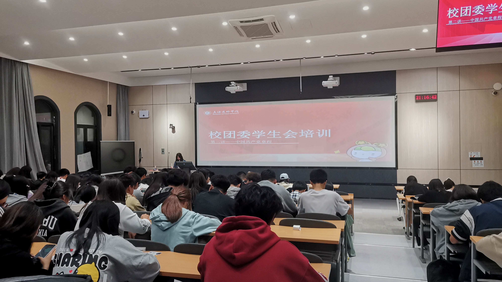

部门介绍
校团委媒体中心作为学校宣传思想工作的核心阵地，不仅是校园文化的积极塑造者，更是学校发展成果的忠实记录者。
我们始终坚守 “服务学校发展、服务师生成长” 的初心，以镜头捕捉校园瞬间，以文字传递教育温度，以创意激活文化活力。
。在这里，每一篇报道都凝聚着对校园生活的深刻洞察，每一次传播都致力于放大青春正能量，让优秀的校园文化在师生心中生根发芽，成为连接学校与师生的情感纽带。
部门活动
社团文化艺术节
涵盖文艺汇演、书画展览、创意市集等系列活动，丰富校园文化生活

团委技能培训
邀请专业导师开展摄影、剪辑、文案写作等技能培训课程

高校媒体交流会
与其他高校媒体组织开展交流活动，分享工作经验与创新思路
期待加入
如果你热爱传媒事业，具备文字功底、摄影技能、设计能力或对新媒体运营有浓厚兴趣，欢迎加入我们的大家庭！
我们提供专业的技能培训、丰富的实践机会和温馨的团队氛围，让你在实践中成长，在合作中收获。
了解招新详情